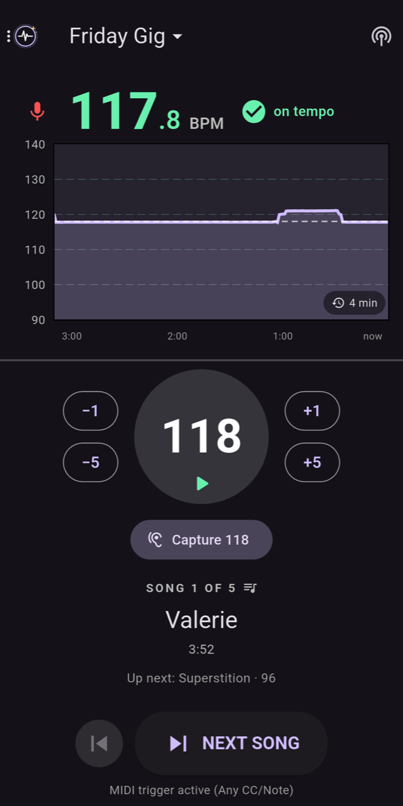
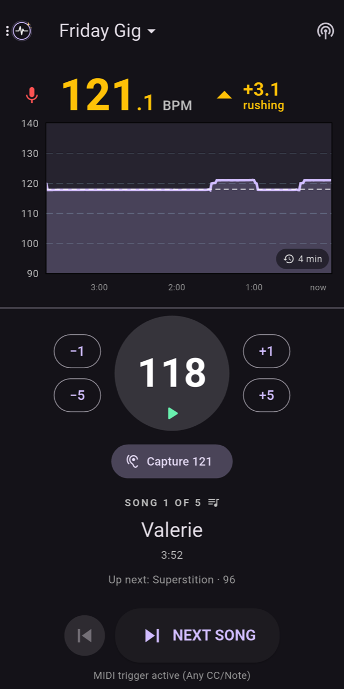
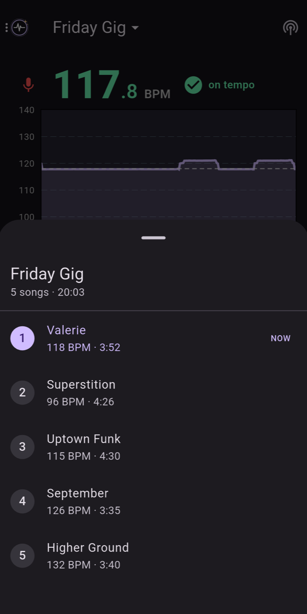
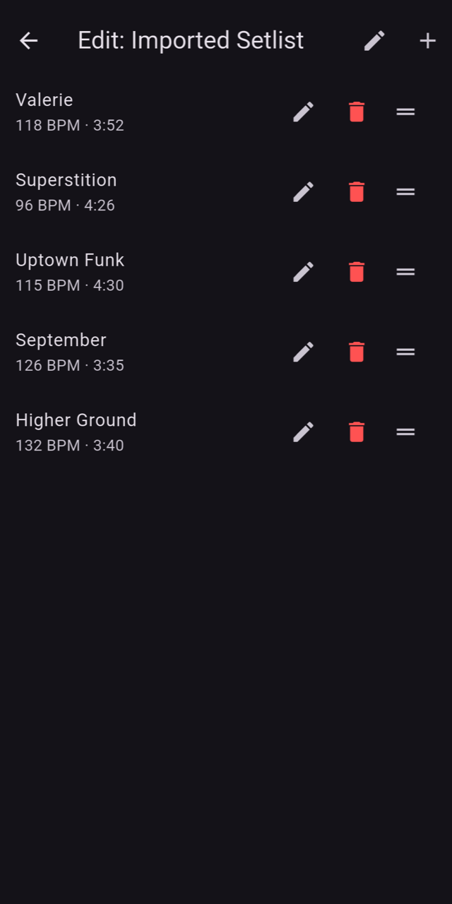
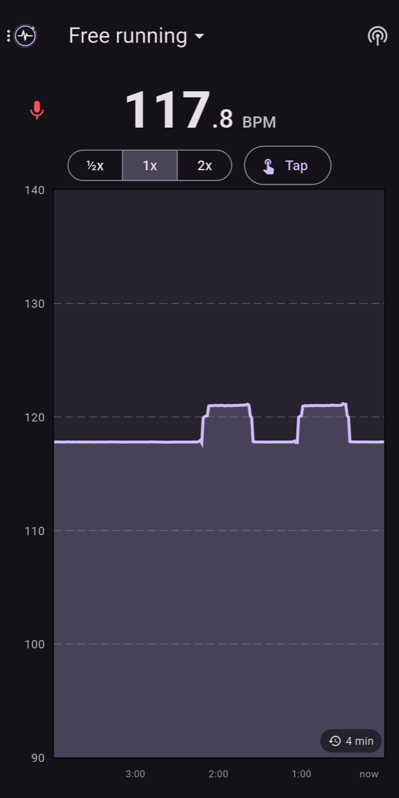
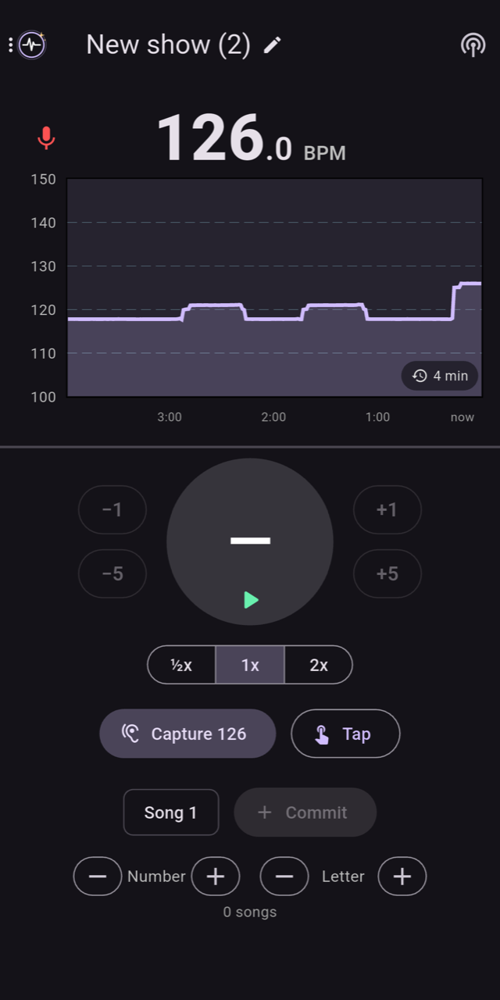
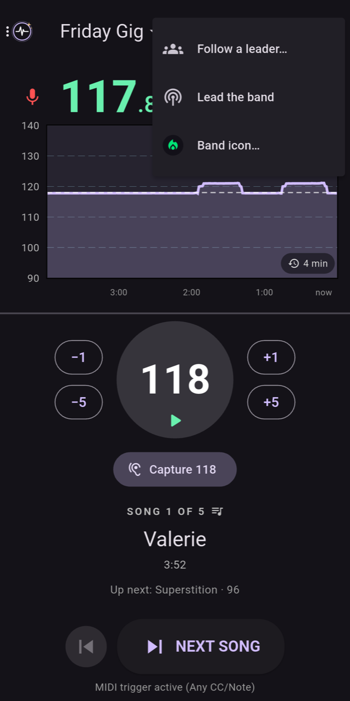
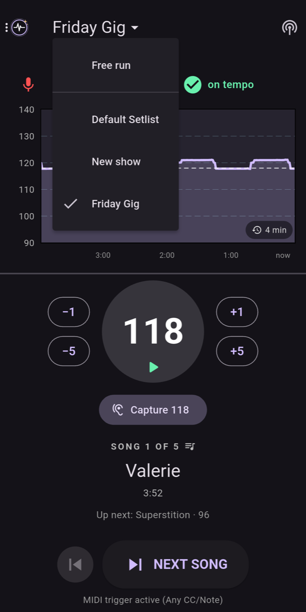
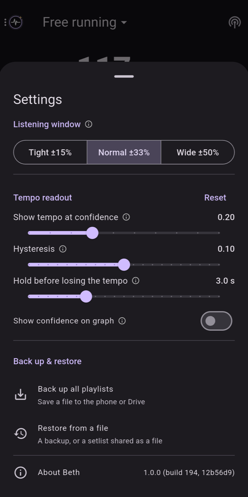
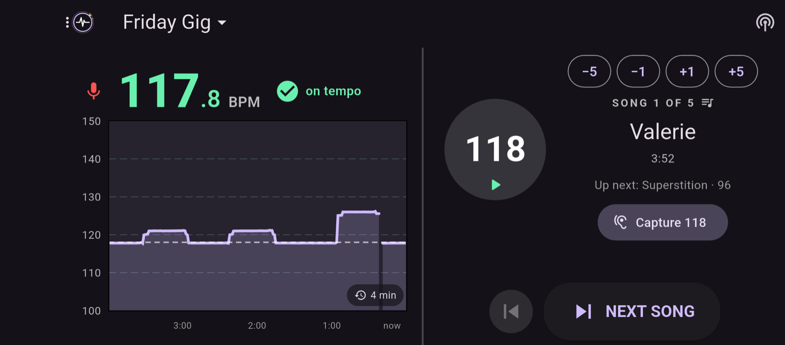

A setlist metronome that listens.
Beth counts your band in at each song's tempo, then listens through the microphone and shows the tempo you're actually playing — live, for drum kits, finger snaps, solo piano, strummed guitar or a lone bass line.


Built for the stage
Big numbers, one hand, a dark screen that stays on. Everything you need between songs, nothing you don't.
Live tempo detection
Hears the band through the mic and shows the tempo to a tenth of a BPM — only when there's a beat worth trusting.
Rushing & dragging alerts
The number goes green, amber or red against the song's tempo, with ▲ rushing / ▼ dragging and how far off you are.
Tempo history graph
See whether you drift over the course of a song, against a dashed target line at the song's BPM.
Setlists
A BPM and optional length per song. Jump to any song, see what's next, edit, reorder, share as text or back up to Drive.
Smart count-in
The metronome starts with each song, then steps aside by itself once the band locks onto the tempo.
Nudge or capture
Fix a song's BPM on the spot: ±1, ±5, or capture the tempo you're hearing with one tap.
Free-running mode
No setlist, no target — a full-screen tempo graph with ½x / 1x / 2x and tap tempo for jams and rehearsal.
Show building
Sketch a whole show at rehearsal: capture or tap each tempo, number it (1, 2a, 3b) and commit it to a new setlist.
MIDI foot switch
Any MIDI note or CC advances to the next song, hands-free.
Band sync
One phone listens; bandmates' phones and a cheap ESP32 display mirror song, target and heard tempo over Bluetooth. No Wi-Fi, no pairing.
Landscape layout
Graph on the left, controls on the right — whichever way your phone sits on the stand.
Local & private
Audio is analysed on the device as it plays. There are no accounts and no cloud; setlists are stored on the phone.
A closer look
Dark, high-contrast, and readable at arm's length.
Know where the band is
The big number is the tempo being heard right now. Its colour tells you how it compares with the song:
- Green — on tempo, within 2%.
- Amber — drifting, 2–5% away.
- Red — off by more than 5%.
Below it, the metronome circle, nudge buttons, Capture, and the current and next songs.
Catch rushing before the audience does
Here the band is pushing 3 BPM over a song set at 118. The readout turns amber and says ▲ +3.1 rushing; the graph shows exactly when the tempo started to climb.

Your whole set, one tap away
Tap the song info to see the full setlist with its running time, and jump to any song. Moving on starts the count-in metronome at the new song's tempo.







How it works
Beth finds the beat from the sound of the music itself — not just drum hits — so it works for sparse and melodic playing too. Everything runs on the device.
- OnsetsA short-time FFT (46 ms window, 10 ms hop) is split into ~50 log-spaced bands from 30 Hz to 16 kHz. The onset signal is the rise in each band, so it reacts to new sound: drum hits and snaps, but also piano, guitar and bass notes changing pitch.
- PeriodicityThe autocorrelation of the last 8 s of onsets is scored for every tempo from 40 to 220 BPM with a harmonic comb — the beat should repeat at 1×, 2×, 3× and 4× its period.
- Half or double?The listening window and the song's BPM decide between readings like 70 and 140, which the audio alone can't settle.
- SmoothingScores are blended over time so the number is steady but still follows real tempo changes.
Tips: put the phone where it hears the whole band, give it a few seconds, and expect free-time (rubato) playing to read as Listening… — there's no steady pulse to find.
Band sync
One phone — the leader — listens and shares what it hears. Everyone else follows and sees the same song, target, tempo and drift colour. It uses Bluetooth LE: no Wi-Fi, no pairing, any number of followers.
Session icons
Each band gets one of 96 icons (16 shapes × 6 colours) with a sayable name — "follow the orange anchor" — so nobody joins the wrong leader by mistake.
Never a frozen number
Followers show an amber banner after 4 s of silence and a red Lost the leader banner after 12 s.
A display for the drum riser
A follower doesn't have to be a phone. The ESP32 follower firmware turns a cheap 2.8″ "Cheap Yellow Display" into a USB-powered tempo screen with song names.
Keep the leader's app on screen — phones stop broadcasting in the background. Range is a typical stage, about 10 m.
Setlists you can share as text
Share sends a readable list your bandmates can use as-is. Import accepts almost any style of list — Superstition - 100, 1. Valerie, 118 bpm, 120 Song name.
# Beth setlist: Friday Gig Valerie, 118, 3:52 Superstition, 96, 4:26 Uptown Funk, 115, 4:30 September, 126, 3:35 Higher Ground, 132, 3:40
Back everything up to one file and restore it on a new phone — to Downloads, Google Drive, or iCloud Drive via Files.
Get Beth
Beth is open source (MIT) and built with Flutter. Android is the primary, tested platform; iOS and macOS builds are scaffolded but not fully tested. There's no store listing yet, so build it and sideload it:
git clone https://github.com/greenlava82/Beth.git cd Beth flutter pub get tool/flutter_versioned.sh build apk --release adb install -r build/app/outputs/flutter-apk/app-release.apk
See the development setup for requirements, emulator tips and how to run the tests.